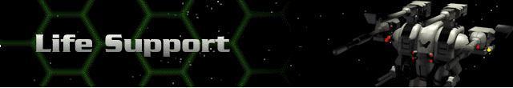

All Life Support Systems are gradually available to all Hercs.
Standard – Stored vital nutrition and atmosphere allow a seated environment.
Improved – Advances in storage techniques improve performance.
Integrated – limited pseudo-biosphere proves more beneficial to the pilot.
Total – a comprehensive biosphere not only sustains but improves significantly the Bioderm’s internal equilibrium.
Multishell – a series of protective shells decreases the chance of compromising this improved environment
Reactive – this environment actively protects the status quo, and repairs damaged Bioderm cells.
Med System – Medvat technologies, long too fragile for combat, are partially integrated into environment design.
Bioenvironment – additional Medvat technologies are integrated into the environment.
Self Repair – environment provides virtually all of the functionality of the Medvat, paired with a highly reactive environment.
Liquid Life – Bioderm is immersed in a complete nutrition and healing gel.